¿Te gusta la fruta?
El Solomon Island Cocktail es un cóctel tropical asociado con las Islas Salomón. Su historia documentada es escasa, pero aparece en recopilaciones internacionales de cócteles del mundo. A pesar de su nombre, es un trago poco conocido y existen muy pocas referencias sobre su origen, pero aparece en "The Cocktail Atlas: Around the World in 200+ Drinks." en la sección de Oceanía
RECETA
- 30 ml brandy de cereza
- 45 ml gin
- 30 ml triple sec
- 120 ml jugo de piña
- 30 ml jarabe de maracuyá
- Hielo
- Gajo de piña para decorar
- Agrega todos los ingredientes a una coctelera con hielo.
- Agita bien hasta enfriar.
- Cuela en un vaso con hielo.
- Decorar con un gajo de piña.
Vaso: Vaso alto (highball)